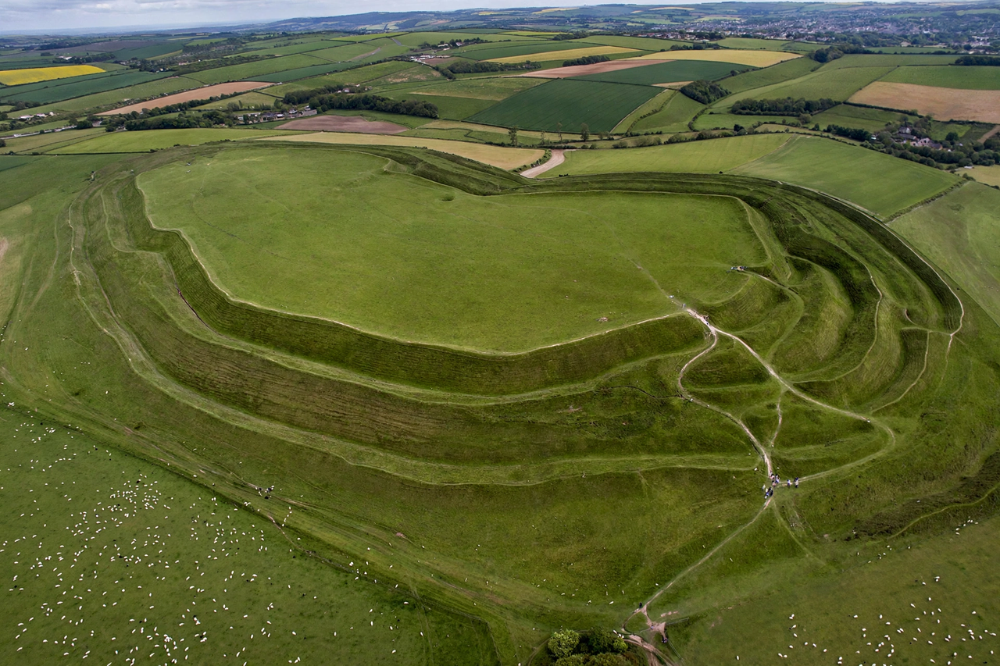

Earthwork (archaeology)
| Earthwork (archaeology) | |
|---|---|
| Type | Artificial change in land level |
| Examples | Mounds, henges, hillfort ramparts, dykes |
| Survey method | Earthwork survey, hachure plan |
In archaeology, earthworks are artificial changes in land level, typically made from piles of artificially placed or sculpted rock and soil. Earthworks can themselves be archaeological features, or they can show features beneath the surface. Their study forms an important part of landscape archaeology.

Types
Common categories of earthwork include:
- Mounds — burial mounds, hillfort platforms, motte-and-bailey castles
- Banks and ditches — field systems, defensive dykes, enclosure boundaries
- Henges — circular banks with internal ditches, characteristic of Neolithic Britain
- Linear earthworks — long dykes such as Offa's Dyke, reservoir embankments
Survey
Earthworks are recorded by earthwork survey, traditionally drawn as hachured plans in which short strokes indicate the direction and steepness of slope. Modern surveys use GPS, total stations and geophysical techniques alongside aerial photography and LiDAR.
Preservation
Upstanding earthworks are vulnerable to ploughing, erosion, burrowing animals and development. Many are protected as scheduled monuments, though agriculture has levelled large numbers of low-relief examples, leaving them detectable only as cropmarks.